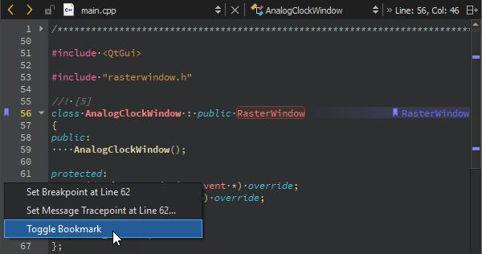
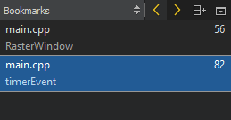

Working in Edit Mode
This section describes how to use the Edit mode. For more information about using the sidebar, see Browsing Project Contents.
Using the Editor Toolbar
The editor toolbar is located at the top of the editor view. The editor toolbar is context sensitive and shows items relevant to the file currently open in the editor.

Navigating Between Open Files and Symbols
Use the toolbar to navigate between open files and symbols in use. To browse backward or forward through your location history, click (Go Back) and  (Go Forward).
(Go Forward).
To go to any open file, select it from the Open files drop-down menu (1). To open a context menu that contains commands for managing open files, right-click the file name or icon on the toolbar. In addition to the commands also available in the File menu, you can copy the path and name of the current file and the number of the line where the cursor is currently located to the clipboard by selecting Copy Full Path, Copy File Name, or Copy Path and Line Number.
To jump to any symbol used in the current file, select it from the Symbols drop-down menu (2). By default, the symbols are displayed in the order in which they appear in the file. Right-click the menu title and select Sort Alphabetically to arrange the symbols in alphabetic order.
To jump to a line and column in the current file, select the line and column indicator (3) or press Ctrl+K (or Cmd+K on macOS) to open the locator. Enter the line number and column number in the locator, separated by a colon (:).
Note: Other convenient ways of navigating in Qt Creator are provided by the keyboard shortcuts and the sidebar.
Selecting Parse Context
Code might be interpreted differently in different contexts. A file can be used by different projects or subprojects with different defines, or it can be included in the context of C, C++, Objective-C, or Objective-C++. To change the active parse context, select an available parse context in the Active Parse Context menu (4). The menu is visible only when several parse contexts are available. To reset the parse context, right-click on the menu to open a context menu, and then select Clear Preferred Parse Context. If the information needed for parsing the project is still incomplete or incorrect, select Additional Preprocessor Directives to add preprocessor directives.
Changing Text Encoding
To show the file encoding of the current file on the editor toolbar (5), select Tools > Options > Text Editor > Display > Display file encoding.
To change the text encoding, click it on the toolbar and select new encoding in the Text Encoding dialog:
To reload the file with the selected encoding, select Reload with Encoding. To save the file with the new encoding, select Save with Encoding.
Splitting the Editor View
Split the editor view or open the editor in a new window when you want to work on and view multiple files on the same screen or on multiple screens.

You can view multiple files simultaneously in the following ways:
- To split the editor view into a top and bottom view, select Window > Split, press Ctrl+E, 2, or select the
 (Split) button and then select Split.
(Split) button and then select Split.Split command creates views below the currently active editor view.
- To split the editor view into adjacent views, select Window > Split Side by Side, press Ctrl+E, 3, or select Split > Split Side by Side.
Side by side split command creates views to the right of the currently active editor view.
- To open the editor in a detached window, press Ctrl+E, 4, or select Window > Open in New Window.
The new window behaves basically in the same way as the editor area in the main window. For example, you can split this window, as well. Documents are opened in the currently active editor window.
To move between split views and detached editor windows, select Window > Go to Next Split or Window or press Ctrl+E, O.
To remove a split view, place the cursor within the view you want to remove and select Window > Remove Current Split, press Ctrl+E, 0, or select the (Remove Split) button. To remove all but the currently selected split view, select Window > Remove All Splits or press Ctrl+E, 1.
Using Bookmarks
To insert or delete a bookmark:
- Right-click the line number and select Toggle Bookmark.
- Press Shift and click the left margin at a line.
- Press Ctrl+M when the cursor is on a line.

To add a note to a bookmark, right-click the bookmark and select Edit Bookmark. To view the note, move the mouse pointer over the bookmark.
To go to the previous bookmark in the current session, select Tools Bookmarks > Previous Bookmark or press Ctrl+,.
To go to the next bookmark in the current session, select Tools Bookmarks > Previous Bookmark or press Ctrl+..
To use the locator to go to a bookmark, press Ctrl+K (or Cmd+K on macOS) to open the locator. Enter b and a space to display a list of bookmarks. To filter the bookmarks by line number or a text string, enter the number or string after the space. Double-click a bookmark in the list to go to it in the editor.

Bookmarks are listed in the Bookmarks view in the sidebar. To move between bookmarks, select the Previous Bookmark or Next Bookmark button or use the keyboard shortcuts.

Moving to Symbol Definition or Declaration
You can move directly to the definition or the declaration of a symbol by holding the Ctrl key and clicking the symbol. If you have multiple splits opened, you can open the link in the next split by holding Ctrl and Alt while clicking the symbol.
To enable this moving function, select Tools > Options > Text Editor > Behavior > Enable mouse navigation.
There are several additional ways of moving between symbol definitions and declarations. All the functions described below are also available from the Tools > C++ menu. The functions supported for QML and JavaScript code are available from the Tools > QML/JS menu.
You can select the symbol and press F2, or right-click the symbol and select Follow Symbol Under Cursor to move to its definition or declaration. To follow the symbol in the next split, select Follow Symbol Under Cursor in Next Split. Following symbols is supported for namespaces, classes, functions, variables, include statements, and macros.
To switch between the definition and declaration of a function, place the cursor on either and press Shift+F2 or right-click and select Switch Between Function Declaration/Definition or Open Function Declaration/Definition in Next Split. For example, this allows you to navigate from anywhere within a function body directly to the function declaration.
Links are opened in the same split by default. To open links in the next split, prepend Ctrl+E to the shortcut. For example, press Ctrl+E,F2 to follow the symbol in the next split. If necessary, the view is automatically split. To change the default behavior, select Tools > Options > Text Editor > Display > Always open links in another split. Additional symbols are displayed and switching between definition and declaration is done in another split. If you change the default behavior, the shortcuts for opening link targets in the next split are used to open them in the current split.
To switch between C++ header and source files, right-click anywhere in a file and select Switch Header/Source or Open Corresponding Header/Source in Next Split. You can also press F4 or Ctrl+E,F4, respectively.
Reparsing Externally Changed Files
If source files are modified from outside Qt Creator, the opened files will be reparsed automatically. For all other files, you can use Tools > C++ > Reparse Externally Changed Files to update the code model.
Inspecting the Code Model
When you report a bug that is related to the C++ code model, the Qt Creator developers might ask you to write information about the internal state of the code model into a log file and to deliver the file to them for inspection.
To view information about the C++ code model in the C++ Code Model Inspector dialog and write it to a log file, select Tools > C++ > Inspect C++ Code Model or press Ctrl+Shift+F12.
Qt Creator generates the code model inspection log file in a temporary folder.
Qt Creator underlines semantic errors in olive in the C++ code editor. To check the correct paths for includes that are not resolved or that are resolved to the wrong file, select Project Parts > Header Paths.